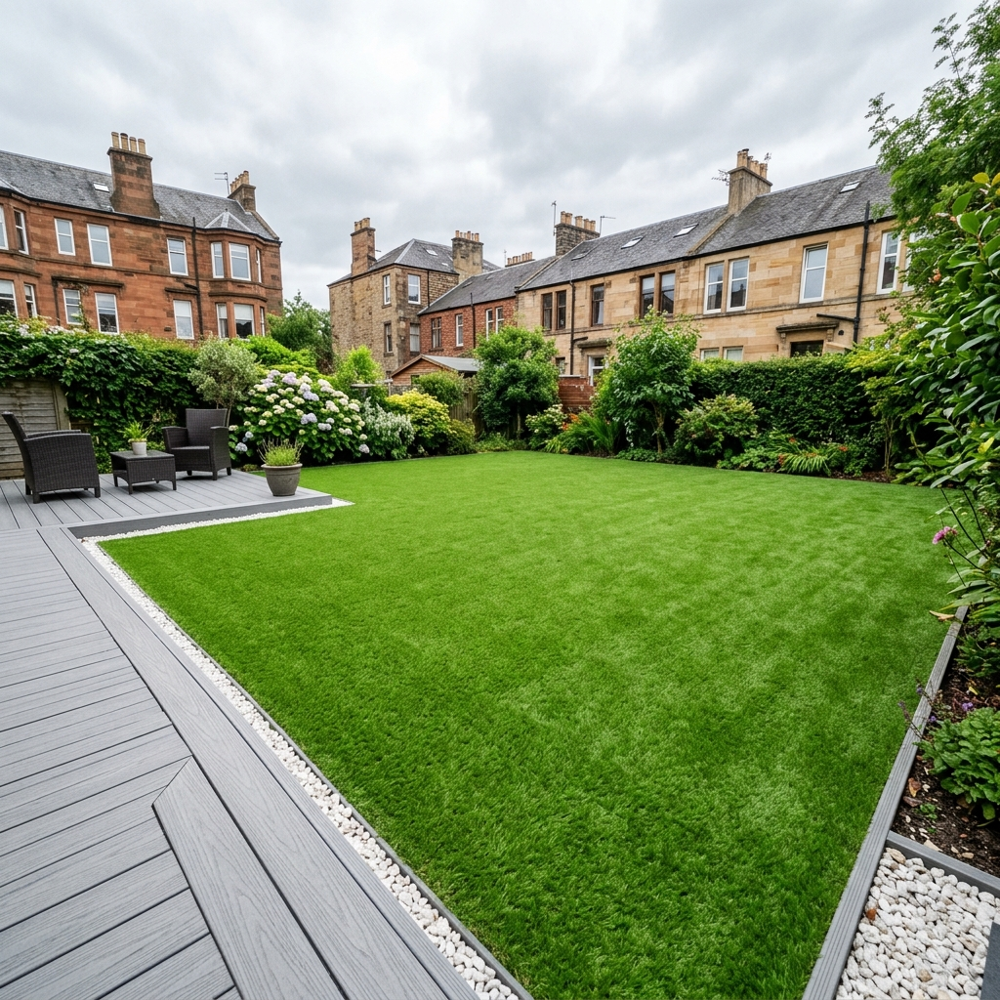
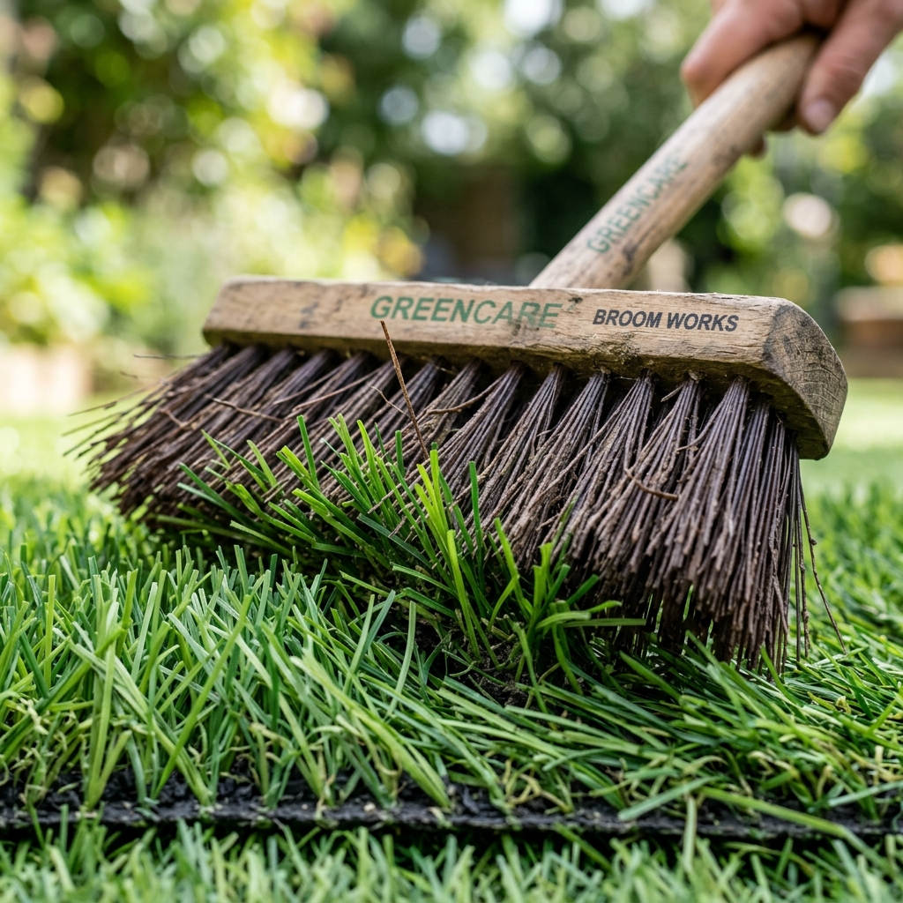
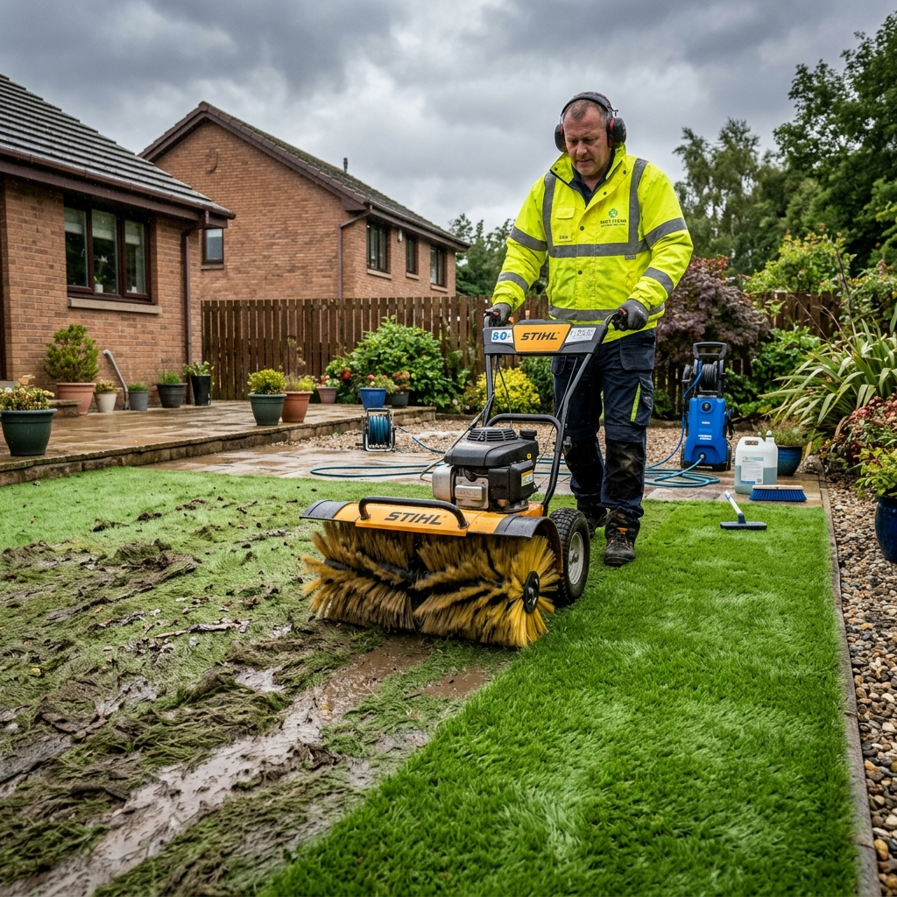

How to Clean Artificial Grass in Glasgow — The Complete DIY & Pro Guide (2026)

Artificial grass is supposed to be low-maintenance — and it is. But "low-maintenance" doesn't mean zero maintenance. Especially in Glasgow, where we get more than our fair share of rain, leaf fall, algae and the odd patch of moss. A bit of regular care keeps it looking great for 15–20 years. Ignore it for a couple of years and you'll have a flattened, mossy mess that needs a full professional restoration.
This guide covers everything: the simple weekly routine, the seasonal deep-clean schedule specific to Glasgow's climate, how to handle stains and pet odours, and when it's genuinely worth calling in a professional service. We install artificial grass across Glasgow, Giffnock, East Kilbride, Bearsden and the surrounding areas — and this is exactly what we tell every customer when the job's done.
Why Glasgow's Climate Makes Maintenance More Important
Most maintenance guides are written for drier parts of the country. Glasgow is different. We average around 1,200mm of rainfall per year — more than twice what London gets. That has a few knock-on effects for artificial grass:
- Moss and algae grow faster. Any shaded or north-facing garden in Glasgow will get a visible green tinge on the grass fibres by late autumn if left unchecked. It doesn't damage the turf, but it looks bad and becomes slippery.
- Leaf debris builds up all winter. Deciduous trees drop leaves from October through December. Left sitting on artificial grass in the rain, they decompose and stain. They also block drainage.
- The infill gets compacted. Heavy, persistent rain beats down the kiln-dried sand infill over time, which flattens the fibres. Regular brushing keeps them upright.
- Pet smells get worse in damp weather. If you have dogs using the lawn, the bacteria in the infill that cause odours are much more active in warm, damp conditions.
The Glasgow Artificial Grass Cleaning Schedule
| Season | Month | What to Do | Time |
|---|---|---|---|
| Spring | March–April | Full brush against the grain. Rinse off winter grime. Check edges for lifting. Apply diluted moss killer if needed. | 45–60 min |
| Summer | May–August | Light brush monthly. Rinse after heavy rain or BBQs. Blot any food/drink spills immediately. Rinse pet areas weekly if used daily. | 15–20 min |
| Autumn | Sept–Nov | Busiest period in Glasgow. Clear leaves every 1–2 weeks with a leaf blower. Brush after each clearance. Keep drains clear. | 30 min / 2 weeks |
| Winter | Dec–Feb | Remove leaf build-up. Apply iron sulphate if moss visible. Avoid metal brushes in frost. Don't use grit salt near the grass. | 30 min monthly |

The DIY Weekly Routine (Takes 15 Minutes)
For most Glasgow gardens that get normal use, this routine every couple of weeks is all you need for summer. In autumn, do it weekly.
- Clear debris first. Use a plastic-tined rake or a leaf blower. Never use a metal rake — the tines snag and pull the fibres. Blow leaves toward one corner and bag them up.
- Brush the fibres upright. Use a stiff-bristled broom (nylon or polypropylene, not wire). Brush against the direction the grass lays — this lifts flattened blades back up. Takes 5 minutes on an average back garden.
- Rinse with a hose. A 2-minute rinse with a garden hose washes down any dust, pollen, bird droppings and general grime into the drainage layer below. No product needed — just water.
- Check the edges and joins. Give the perimeter a quick look to make sure the edging isn't lifting and any joins are still tight. Catch problems early and they're a 5-minute fix. Leave them and they become a £200 repair.
The brush matters most. If there's one piece of kit worth buying, it's a good artificial grass brush — stiff nylon or polypropylene bristles. Most garden centre brushes are too soft. A power brush (from around £40–£60) is even better for larger gardens.
Stain Removal — What Works and What Doesn't
Food and Drink
Act fast. Blot up as much liquid as possible before it soaks into the infill. Then rinse with cold water. For stubborn stains — red wine, tomato sauce, BBQ grease — diluted mild washing-up liquid in warm water works well. Scrub gently, then rinse thoroughly. Don't leave soap residue behind.
Oil and Grease (BBQ fat, engine oil)
Pour a small amount of white spirit or dry cleaning fluid directly onto the stain. Let it sit for 5 minutes, then blot and rinse. Don't rub — blotting lifts the oil up rather than spreading it. Repeat if needed and rinse well with cold water.
Moss and Algae (Very Common in Glasgow)
Don't use bleach. Use a diluted iron sulphate solution (1–2%) or a specialist artificial grass moss killer. Apply, leave for 24 hours, then rinse thoroughly. For widespread moss, a professional treatment is more effective and lasts longer.
Never use bleach, ammonia-based cleaners or harsh solvents on artificial grass unless the manufacturer specifically says it's safe. These can discolour the fibres, damage the latex backing, and create toxic run-off. Mild washing-up liquid and water sorts 90% of problems.
Pet Odours — The Glasgow Dog Owner's Problem
Dog urine doesn't smell on natural grass because it soaks away and dilutes in soil. On artificial grass, urine drains through but the bacteria stays in the kiln-dried sand infill. In Glasgow's warm, damp summers, those bacteria multiply fast.
The fix isn't soapy water — that just masks it. You need an enzyme-based pet neutraliser (brands like Simple Solution, Urine Off, or Pet + Me). These products contain bacteria that consume the odour-causing bacteria in the infill. They eliminate the problem rather than covering it up. Use weekly for dog-heavy gardens.
For severe, long-standing odours where the grass has been down for a year or more without treatment, the infill layer itself may need replacing as part of a professional clean. That's when it's time to call us.
Professional Artificial Grass Cleaning in Glasgow — Costs & What's Included

Once a year — or every two years if you're on top of DIY maintenance — a professional clean is worth the money. Especially for larger gardens, pet-heavy households, or gardens that have developed moss or compaction issues.
| Service | Glasgow Price (2026) | What's Included |
|---|---|---|
| Standard Deep Clean (up to 30m²) | £99–£130 | Debris removal, power brushing, surface rinse, edge inspection |
| Standard Deep Clean (30–60m²) | £130–£180 | As above, larger area |
| Pet Odour Treatment (add-on) | +£65–£85 | Enzyme neutraliser applied to full lawn and infill |
| Moss & Algae Treatment (add-on) | +£45–£75 | Specialist moss killer and power rinse |
| Full Restoration (neglected lawns) | £180–£280 | Everything above + infill top-up, deep power brushing, full edge check |
Annual cleaning pays for itself. A £130 professional clean once a year adds years to a grass installation that might have cost £2,000–£3,000. Much better return than any other garden maintenance spend.
When Should You Call a Professional?
- The grass has been down for 2+ years and never professionally cleaned
- You have dogs and DIY enzyme treatments aren't shifting the smell
- There's visible moss or a green algae tinge across more than 20% of the surface
- Fibres are flat and won't brush back up — they need a machine
- Water is pooling after rain — drainage problem
- Edges are starting to lift in multiple places
Frequently Asked Questions
How often should you clean artificial grass in Glasgow?
Every 2 weeks during autumn and winter to stay on top of leaf fall. Monthly is enough in summer for most gardens. Dogs using the lawn daily need weekly rinsing at minimum. A proper deep clean once a year keeps everything in top condition.
Can you use a pressure washer on artificial grass?
Yes, carefully. Keep pressure below 40 bar, wide-angle nozzle (40°+), at least 30cm from the surface, cold water only. Too much pressure displaces the kiln-dried sand infill — an extra cost you don't want. A garden hose is safer and does the job for regular cleaning.
How do you get rid of pet odours on artificial grass?
Enzyme-based pet neutralisers are the only thing that actually works — not bleach, not soapy water. The enzyme solution breaks down the bacteria in the infill causing the smell. Apply weekly for dog-heavy gardens. For severe, persistent smells, a professional treatment that reaches the infill is the proper fix.
How much does professional artificial grass cleaning cost in Glasgow?
£99–£180 for a standard deep clean depending on lawn size. Add £65–£85 for pet odour treatment. Full restoration on a neglected lawn runs £180–£280. We give free quotes based on your specific garden size and condition.
Does artificial grass get moss in Scotland?
Yes, regularly — especially in north-facing Glasgow gardens or anywhere under tree cover. Diluted iron sulphate (1–2% solution) applied and rinsed after 24 hours deals with it. For widespread coverage, a professional treatment is more thorough and typically lasts longer.
More From the Brickscapes Blog
Need Your Artificial Grass Cleaned in Glasgow?
We cover all of Glasgow and the surrounding towns — Giffnock, Bearsden, East Kilbride, Rutherglen, Newton Mearns and everywhere in between. Free, no-obligation quotes.